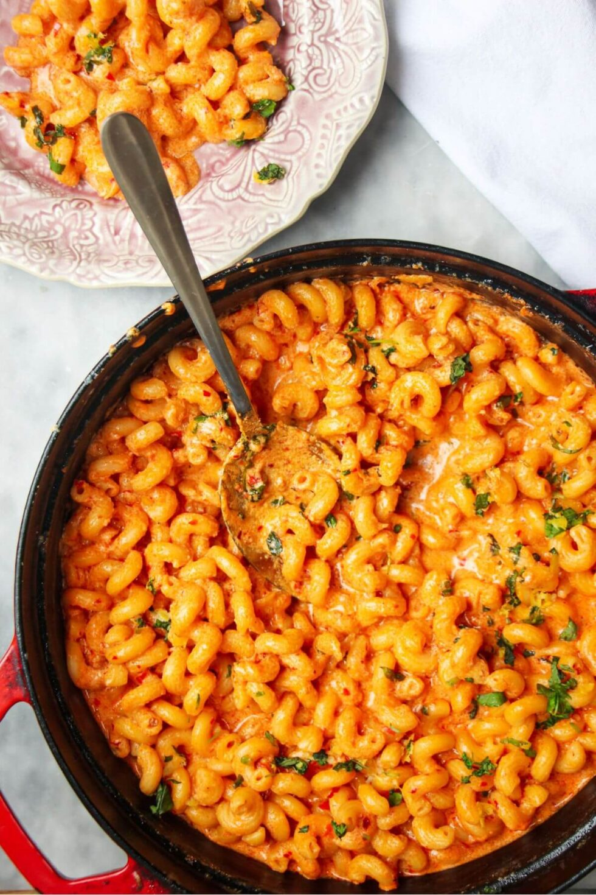

Spicy Mac and Cheese Recipe

Spicy One Pot Mac and Cheese
This easy one pot mac and cheese is loaded with spicy paste(‘nduja or gochujang) to make a supercharged, gooey, saucy mac and cheese with no need to make a roux, no butter and no flour. Just add everything into a pot and let the magical pasta starch do all the heavy lifting.
This technique for mac and cheese is truly a game-changer. Usually, you need to make a cheesy bechamel sauce, cook the pasta separately, and then add everything together. This way, all you have to do is add everything into one pot and stir. 20 minutes max, and you’re done.
The secret? Starch. As the pasta cooks, the starch releases into the cooking liquid, naturally thickening the sauce without having to add anything else. Starch is why you should always add a little pasta cooking water to your finished pasta dishes to thicken the sauce up and make it nice and glossy. And we’re using it to its full potential here. It also means fewer dishes which is always a win in my mind!
‘Nduja paste is the magic ingredient that takes this mac and cheese to another level. This funky, umami-packed spreadable salami from Calabria just delivers so much flavor. It’s spicy, meaty and truly delicious. I also LOVE using gochujang paste here – either works beautifully.
Ingredients
- pasta - I’m using cavatelli, but you can use any small shape like fusilli or macaroni
- milk - You’ll ideally want to use whole milk for the ultra-creamy factor, but semi-skimmed will also work
- cheese - I’m using a mix of strong cheddar, gruyere and parmesan. You can mix this up – I’d recommend good strong-flavoured cheeses just so you can really taste them. Adding in a little blue cheese is also lovely
- 'nduja paste - This is the real magical ingredient. ‘Nduja is a spicy, spreadable salami from Calabria in Italy and is a flavor powerhouse. It’s becoming much more readily available – larger grocery stores are starting to stock it, or you can pick it up from Italian delis, or even Amazon. It will either come in a jar on the shelf, or as a slab in the fridge section. If you can’t find it, use gochujang paste, harissa paste, sriracha or finely chopped chorizo
- parsley and lemon - We’re going to make a quick, herby zesty gremolata (parsley, lemon zest and garlic) to top the mac and cheese with. This is a wonderful way to cut through the richness of the pasta, so I really recommend making it. You could swap out the parsley for cilantro, scallions or basil if you like
How to Make Spicy One Pot Mac and Cheese
- Add a little olive oil and the ‘nduja paste (or gochujang paste) into a large, high-sided pan over medium heat and cook for a couple of minutes until the ‘nduja melts into the oil
- At this point, add the pasta, crushed garlic, milk and water. Give everything a good stir, then bring to a simmer
- Lower the heat, then simmer for about 10 minutes, stirring occasionally, until the sauce has thickened a bit (it will still be a bit saucy – the cheese will help thicken it more) and the pasta is al dente
- PRO TIP: You can also add the ‘nduja paste at the end when you melt in the cheese – I’ve tested both ways and the result is the same
- While the mac and cheese is simmering, make the gremolata
- hat’s as simple as mixing the chopped flat-leaf parsley with the zest of a lemon and crushed garlic clove
- Once the pasta is al dente (cooked, but still with a little bite to it), add the cheese and mix to combine it into the sauce
- Remove from the heat, top with the gremolata and serve right away, while hot, gooey and ultra cheesy
- PRO TIP: If you’re using an ovenproof skillet, you can pop the mac and cheese under the grill (broiler) for a few minutes before serving if you like. If you do this, keep about 1/4 cup of cheese aside to scatter on top before you put the pan under the grill. Top with the gremolata once it’s out of the oven
Homepage